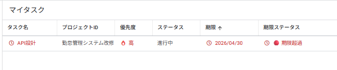
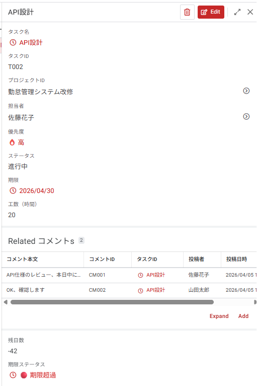
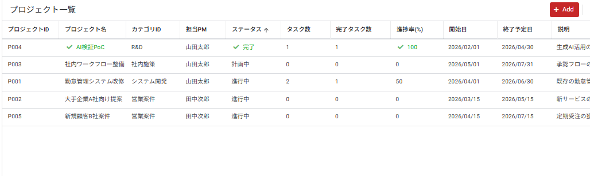
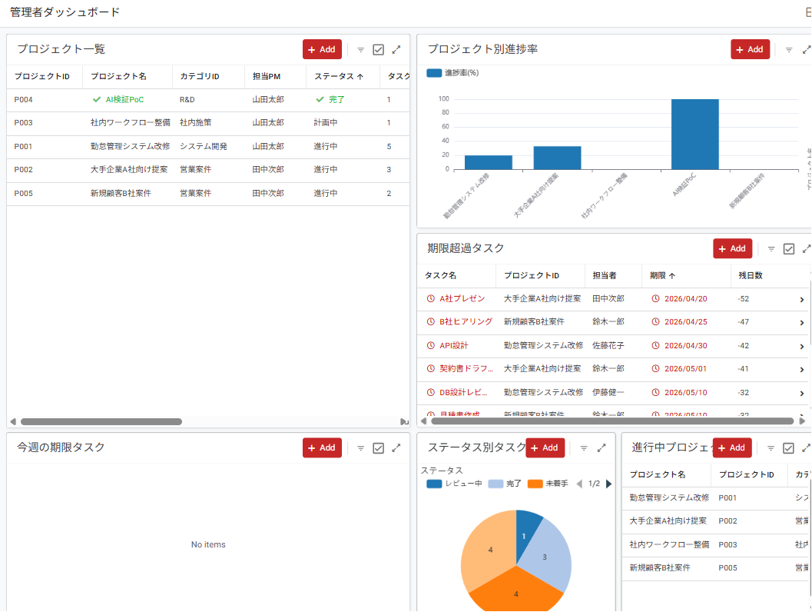

上級編の概要とアプリ設計
📁 練習用ファイル（ダウンロード）
-
1
クリックすると Google ドライブにコピーが作成されます。そのまま上級編の教材として使用してください。
-
2
上級編の完成版アプリです。迷ったときに参照してください。リンクをクリックするとブラウザで開きます。
1-1 上級編で目指すレベル
上級編では、初級編・中級編で学んだ知識を土台に、複数ユーザーが同時に使う本格的な業務アプリ を設計・構築できる力を養います。具体的には次の3つのスキルを習得します。
- 3階層リレーションを使ったデータ設計（プロジェクト → タスク → コメント）
- Security Filter によるユーザー別データ制御（ログインユーザーで表示を切り替え）
- Dashboard View と Chart View による可視化（KPI ・グラフ・統合ダッシュボード）
■ 初級・中級との違い
| レベル | テーマアプリ | 主な学び |
|---|---|---|
| 初級編 | 備品管理アプリ | 単一テーブル／基本ビュー／フォーム入力／簡単なAction |
| 中級編 | 勤怠管理アプリ | 3テーブル＋Ref／Slice／Format Rules／Action条件式／Automation |
| 上級編 | プロジェクト管理アプリ | 5テーブル＋3階層リレーション／Security Filter／Dashboard／Chart／高度な関数 |
1-2 作成するアプリ ─ プロジェクト管理アプリ
上級編で作成するのは、プロジェクト管理アプリ です。中小規模のチーム（5〜30名）が、複数のプロジェクトを並行管理することを想定した、実務でそのまま使えるレベルのアプリを目指します。
■ アプリでできること
| 機能 | 概要 |
|---|---|
| プロジェクト管理 | 複数プロジェクトをカテゴリ別に管理。開始日・終了予定・進捗率を一元表示 |
| タスク管理 | プロジェクトに紐づくタスクを担当者・優先度・期限とともに管理 |
| コメント機能 | タスクごとにメンバー間で進捗共有・質問のやりとりができる |
| マイタスク | ログインしたメンバーが自分の未完了タスクだけを見られる |
| 管理者ダッシュボード | PMがプロジェクト全体の進捗をグラフで俯瞰できる |
| 権限制御 | 管理者は全データ、メンバーは自分の担当データのみ表示 |
1-3 完成アプリのイメージ
上級編で完成するプロジェクト管理アプリの画面イメージです。ゴールが見えていると、各章の作業が理解しやすくなります。
■ 完成画面イメージ（4画面）




1-4 2ロール設計（管理者とメンバー）
上級編のアプリでは、ログインユーザーの役割（ロール）によって表示内容や操作権限を変える 仕組みを取り入れます。これは中級編にはなかった、上級編ならではの設計です。
プロジェクトマネージャー。全データを閲覧・編集できる。
- 全プロジェクトの作成・編集
- タスクの担当者割り当て
- 全タスク・全コメントの閲覧
- 管理者ダッシュボードでKPIを俯瞰
- メンバーマスタの編集
プロジェクトに参加するチームメンバー。自分の担当のみ操作可能。
- 自分が担当のタスクのみ表示
- 自分のタスクのステータス更新
- コメント投稿
- マイタスクで自分の未完了タスクを確認
- プロジェクト全体の閲覧は可能
■ ロール制御の仕組み
このロール制御は、第3章で学ぶ Security Filter と USEREMAIL() 関数で実現します。ログインしているユーザーのメールアドレスを取得し、メンバーテーブルのロール情報と照合することで、見せるデータを動的に切り替えます。
でアドレス取得
管理者 or メンバー
メンバー：自分のみ
1-5 5テーブル設計と3階層リレーション
上級編のプロジェクト管理アプリは、5つのテーブルを連携 させて動作します。中級編が3テーブルだったのに対し、上級編では 3階層のリレーション（プロジェクト → タスク → コメント）を扱うのが大きな違いです。
■ テーブル全体図
■ 5つのテーブルの役割
| No. | テーブル名 | 分類 | 役割 |
|---|---|---|---|
| 1 | メンバー | マスタ | チームメンバーの一覧。Security Filter の基盤になる重要テーブル |
| 2 | カテゴリ | マスタ | プロジェクトの分類（システム開発／営業案件／社内施策 など） |
| 3 | プロジェクト | トラン | プロジェクトの基本情報。タスクの親レコード |
| 4 | タスク | トラン | 個別タスク。プロジェクトの子・コメントの親 |
| 5 | コメント | トラン | タスクへのコメント。最下層の子レコード |
■ 各テーブルのカラム概要
各テーブルの詳しいカラム設計は 第2章 で扱います。ここでは概要だけ把握しておきましょう。
| テーブル | 主なカラム |
|---|---|
| メンバー | メンバーID(KEY) / 氏名(LABEL) / メールアドレス / ロール(Enum) / 所属部署 |
| カテゴリ | カテゴリID(KEY) / カテゴリ名(LABEL) / カテゴリ色(Color) |
| プロジェクト | プロジェクトID(KEY) / プロジェクト名(LABEL) / カテゴリID(Ref) / 担当PM(Ref) / 開始日 / 終了予定日 / ステータス(Enum) / 説明 / 進捗率(VC) / タスク数(VC) / 完了タスク数(VC) |
| タスク | タスクID(KEY) / プロジェクトID(Ref) / タスク名(LABEL) / 担当者(Ref) / 優先度(Enum) / ステータス(Enum) / 期限 / 完了日 / 工数 / 残日数(VC) / 期限ステータス(VC) |
| コメント | コメントID(KEY) / タスクID(Ref) / 投稿者(Ref) / 投稿日時 / コメント本文 |
※ VC = Virtual Column（自動計算カラム。第4章で設定）
1-6 全9章のロードマップ
上級編は9章構成で、段階的にアプリを完成させていきます。
| 章 | テーマ | 主な学び |
|---|---|---|
| 1 | 上級編の概要とアプリ設計 | 5テーブル設計／2ロール／3階層リレーション／完成イメージ ←この章 |
| 2 | 複合リレーションの構築 | 3階層リレーション／Is a part of?／Ref_Rows の活用 |
| 3 | メンバー管理とSecurity Filter | USEREMAIL() ／ロール別の表示制御／Row-level セキュリティ |
| 4 | 高度な関数とVirtual Column | SELECT / FILTER / ORDERBY ／進捗率の自動計算 |
| 5 | Dashboard Viewで可視化 | 複数ビューの統合／Chart View （円・棒グラフ）／KPI 表示 |
| 6 | 条件付き書式とUXの仕上げ | 優先度・期限の色分け／LINKTOFORM ／アイコン設定 |
| 7 | Sliceの応用と動的フィルタ | 複合条件 Slice ／「自分の今日のタスク」「期限超過」など |
| 8 | パフォーマンス最適化と運用設計 | Sync 設定／データ量対策／バージョン管理／運用ルール |
| 9 | 全体まとめと今後の展望 | 3レベル総復習／最新機能紹介／さらなる学習リソース |
■ この章のまとめ
- ✓ 上級編で目指すレベル（3階層リレーション・Security Filter・Dashboard）を理解した
- ✓ 作成するアプリ（プロジェクト管理アプリ）の概要を把握した
- ✓ 2ロール設計（管理者／メンバー）と Security Filter の仕組みを理解した
- ✓ 5テーブル構成と3階層リレーション（プロジェクト→タスク→コメント）を把握した
- ✓ 全9章のロードマップを確認した